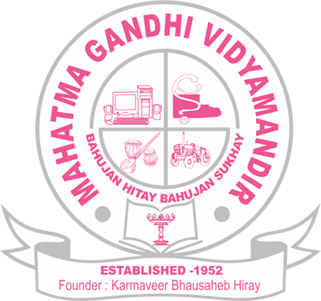

Mahatma Gandhi Vidyamandir, Malegaon Camp owes its existence to the inspiration, pioneering work and farsightedness of its founder member, H ble Late Karmaveer Bhausaheb Hiray, a staunch freedom fighter, one of the pioneers of forming of Maharashtra state and co-operative movement in Nashik District, an educationist and Ex-Revenue minister of then Bombay province. He has founded the two well-known educational institutions in Nashik District, namely "Adivasi Seva Samiti" in 1945 and "Mahatma Gandhi VidyaMandir" in 1952. The major objective of these institution was to provide the educational facilities to the masses from all the spheres, urban, rural and tribal. In 1959, he started a senior college at Malegaon. This gave a great boost to all the students in the North Maharashtra to achieve higher education goals.
The devotional motto of the institution is "Bahujana Hitay BahujanaSukhay". The institution has been registered under society's Registration Act 1860 (No 2766 of 1951-52 dated 21-02-1952) and Bombay Public Trust Act 1950(NO F-27 dated 23-08-1954).
After the sad demise of Karmaveer Bhansaheh Hiray, on 6th November 1961, his elder son Lokenete Vyankatrao Hiray took over the responsibility of the institutions. Under his efforts and guidance, M.G.Vidya Mandir started other colleges imparting higher education in the faculties of Arts, Science, Commerce, Law, Pharmacy and Education at Malegaon and later on at Manmad, Yeola, Nashik and Nampur.
After his unfortunate and untimely demise in the year 1980, his wife Smt. Pushpatai Hiray devoted her services for the continuence of the work. The institution started new colleges at Harsul and Surgana- the remote tribal areas ans a Women's college at Malegaon, and a college at Saundane.
Today M.G. VidyaMandir is progressing under the able leadership of the General Secretary, Hon'ble Shri. Prashantdada Hiray, former Minister of state for Transport. He has also established professional colleges such as Dental Colleges and Hospital, extension of college of pharmacy Institution of Hotel Management and Catering Technology, Institution of Management and Research(MBA) etc, to widen the scope of career selection and to satisfy the growing demands for professional courses in urban areas. His main aim is to enhance the quality of education, right from primary to higher education. His son Hon'ble. Shri Apurva Hiray has also actively Involved himself as a co-ordinator, (M.G. VidyaMandir) in enhancing the quality education in the era of competitive globalization through his dedicated efforts. Presently 87 educational units ranging from primary to post graduate and from traditional education to current disciplines such as Computer Management, Health Sciences, Agriculture, Pharmacy, Hotel Management etc. are managed by the Trust.